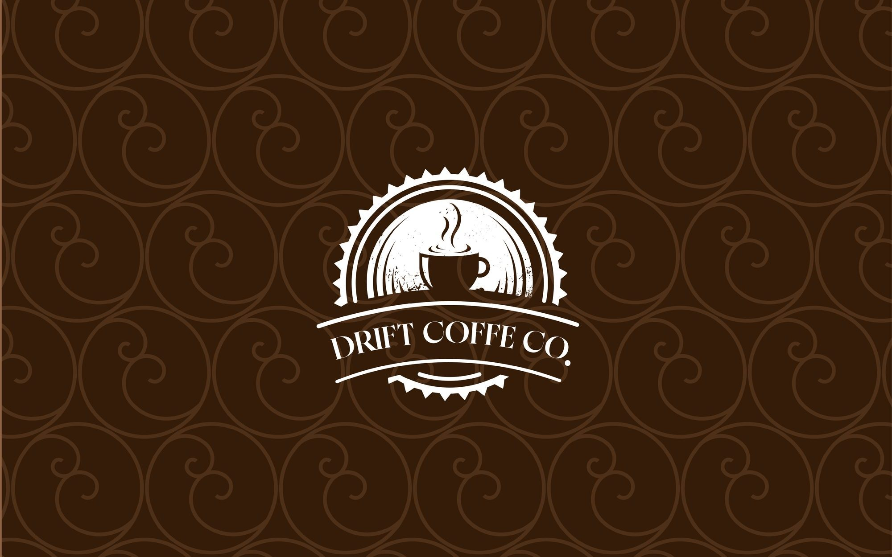

Case file · Brand identity
Drift Coffee Co.
A third-wave café brand inspired by the calm rhythm of ocean waves.

- Project
- Brand identity and mockups
- Client
- Drift Coffee Co. (my own concept brand)
- Studio
- Simply Creations
- Tools
- Adobe Illustrator, Adobe Photoshop
01The brief
At Drift Coffee Co., coffee is more than a drink. It is a ritual of slowing down in a fast-moving world. Inspired by the rhythm of ocean waves and the calm they bring, Drift is a third-wave café made for moments of stillness and connection.
02The idea
A balance of warmth and modern design. Warm, earthy browns capture the comfort of freshly brewed coffee, while a clean badge and a wave-like swirl pattern bring a calm, modern feel. I studied four reference designs for inspiration, then built the brand my own way.
Designed at Simply Creations (2021–2024), the minimalist design studio I founded with three students I trained at HCCPAS. Simple by design.